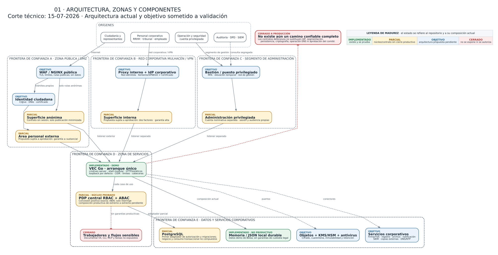
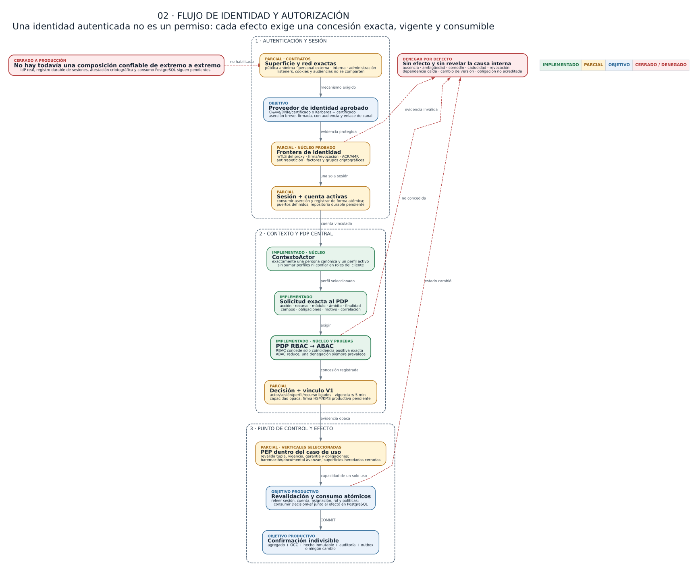
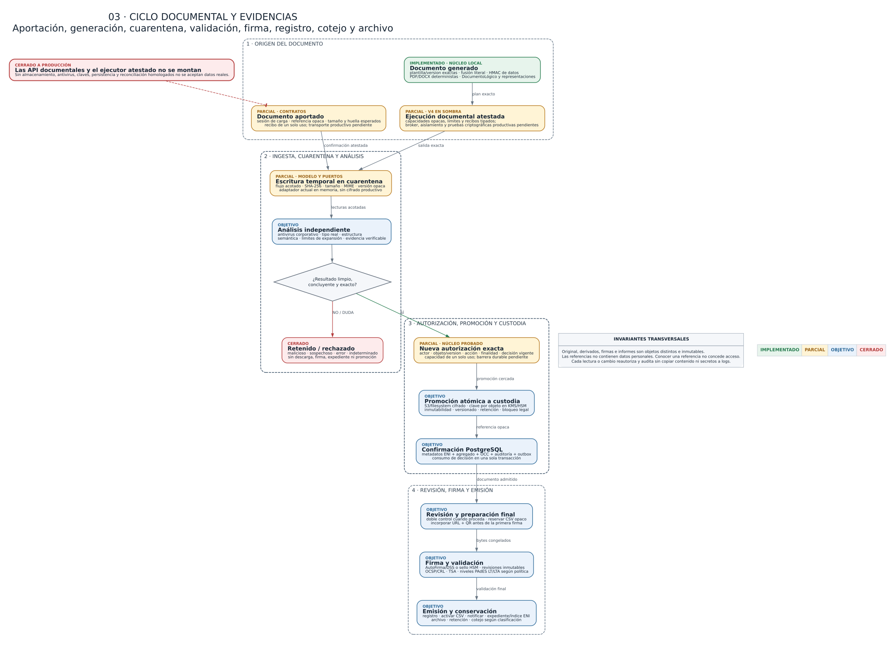
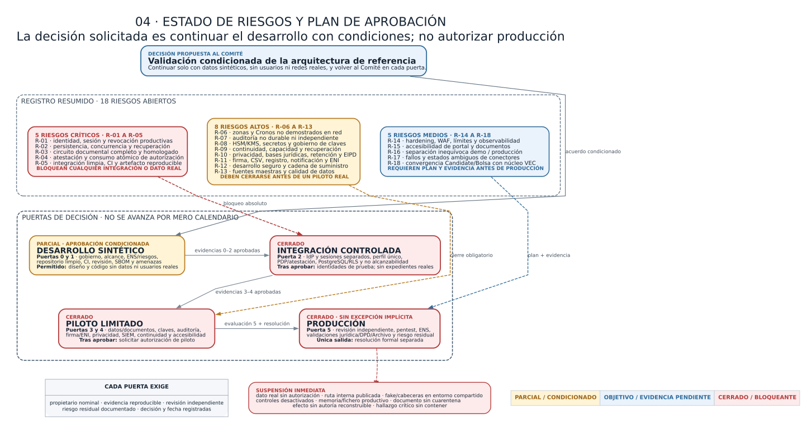

Organización: Diputación de Granada
Sistema: Portal VEC — Ventanilla Electrónica del Empleado Público
Versión del informe: 0.1 — borrador para revisión
Fecha de corte: 15 de julio de 2026
Clasificación propuesta: uso interno / información de proyecto
Estado del sistema evaluado: prototipo y desarrollo activo; no apto para producción ni para datos personales reales
| Campo | Valor |
|---|---|
| Finalidad | Facilitar una decisión temprana del Comité de Seguridad sobre la arquitectura prevista y las condiciones para continuar el desarrollo. |
| Decisión solicitada | Validación condicionada de la dirección arquitectónica, no autorización de puesta en producción. |
| Elaboración | Borrador técnico preparado a partir de evidencias del repositorio; autoría institucional pendiente de asignación. |
| Revisión y aprobación | Pendientes de los responsables de Seguridad, Protección de Datos, Arquitectura/Sistemas y del Comité de Seguridad. |
| Base técnica observada | Repositorio VEC_Diputacion_app, rama vec-orquesta-20260619; revisión iniciada en 68854c0 y último checkpoint de código anterior a esta emisión: c1b42bc, más un árbol de trabajo amplio y en desarrollo. |
| Evidencia principal | Código fuente Go, configuración, migraciones y documentación técnica del repositorio. |
| Exclusiones | Auditoría ENS, análisis jurídico, EIPD, pentest, revisión criptográfica independiente, auditoría de accesibilidad, homologación de productos y validación de infraestructura real. |
| Próxima revisión | Al cerrar los bloqueantes P0 y antes de conectar una identidad, red, base de datos o documento real. |
El Portal VEC se está diseñando como una plataforma modular para servicios de personal, nóminas, control horario, dietas y procesos de Bolsa. La dirección técnica es razonable para continuar: núcleo común, módulos desacoplados, arquitectura hexagonal, autorización central con denegación por defecto, separación prevista de superficies, contratos de auditoría y puertos intercambiables para persistencia e integraciones.
La implementación actual no constituye, sin embargo, un sistema desplegable con información real. Conviven componentes funcionales de demostración, repositorios en memoria o fichero, contratos de seguridad avanzados todavía no conectados y especificaciones de infraestructura pendientes de implantación. La autenticación disponible es exclusivamente de laboratorio; el adaptador PostgreSQL existente cubre una primera barrera de autorización, no la persistencia integral del negocio; y los flujos productivos de almacenamiento, antivirus, firma, registro, notificación, archivo y continuidad siguen cerrados.
Además, ejecuciones puntuales de go test ./... sobre el árbol de trabajo activo del 15 de julio de 2026 no terminaron correctamente mientras avanzaban cambios concurrentes: se observaron una entrada de go.sum pendiente para una dependencia transitiva y símbolos V4 aún incompletos. El checkpoint limpio c1b42bc sí superó la suite Go completa. Por ello, el hallazgo se acota al trabajo no consolidado, que no puede integrarse ni usarse como evidencia de entrega hasta recuperar esa línea verde.
Se propone que el Comité adopte la siguiente decisión:
Aprobar de forma condicionada la continuidad del desarrollo y la arquitectura de referencia, exclusivamente con datos sintéticos y sin exposición productiva, sujeta al cierre verificable de los riesgos críticos y altos de este informe.
Esta decisión no significaría:
El objetivo es revisar de forma temprana si la estructura del sistema permite implantar controles de seguridad suficientes sin rehacer el producto y señalar qué garantías faltan antes de ampliar funcionalidad o incorporar datos reales.
La revisión se centra en:
Se solicita pronunciamiento sobre cuatro puntos:
La opción recomendada es una aprobación condicionada para continuar el desarrollo, con revisión de seguridad en cada puerta indicada en la sección 15.
cmd/vec-server y el centinela retirado cmd/bolsa-server;internal/app;internal/vec;internal/candidate;personal, cronos, dietas, bolsa y administracion;web/static;La valoración se basa en inspección de código y documentación, listado de paquetes, estado Git y una ejecución local de la suite Go. Se ha contrastado el marco general con las fuentes oficiales del ENS, el ENI y las orientaciones de la AEPD para Administraciones públicas.
No se ha dispuesto de:
Por tanto, este documento evalúa una dirección arquitectónica y su grado de implementación, no la seguridad efectiva de un servicio desplegado.
VEC aspira a reunir servicios con niveles de sensibilidad distintos:
| Área | Funciones previstas | Información potencial |
|---|---|---|
| Bolsa | convocatorias, solicitudes, méritos, baremación, alegaciones, listados y llamamientos | identificación, contacto, méritos, documentación acreditativa, resultados y actuaciones administrativas |
| Personal y nóminas | expediente del empleado, puesto, situaciones, antigüedad, certificados y recibos | datos laborales, económicos, fiscales y administrativos |
| Cronos | fichajes, jornada, permisos, ausencias, saldos, cuadrantes y, en su caso, geolocalización | hábitos, presencia, relaciones jerárquicas y posibles categorías de especial riesgo |
| Dietas | comisiones, kilometraje, justificantes, aprobación y liquidación | desplazamientos, importes, cuentas y evidencias de gasto |
| Administración | roles, catálogos, integraciones, operación y auditoría | configuración sensible, evidencias técnicas y referencias de seguridad |
Esta diversidad impide tratar VEC como una única zona homogénea. Cronos y las funciones privilegiadas requieren una segregación más fuerte que la zona pública. La categorización final y las medidas aplicables deberán determinarse formalmente; este informe no presume categoría ENS alguna.
Para evitar equiparar documentación con garantía efectiva, el informe usa estas categorías:
Una capacidad puede estar diseñada e implementada sin estar verificada ni operativa. Ninguna de las capacidades críticas se considera operativa en producción en este informe.
| Capacidad | Estado observado | Arquitectura objetivo | Valoración |
|---|---|---|---|
| Shell modular | Existe registro de módulos, menús, API y frontend estático. | Carcasa común con identidad, sesión, navegación, i18n, documentos, notificaciones y auditoría. | Base útil; falta cerrar contrato productivo y despliegue. |
| Dominio y casos de uso | Amplio modelo Go con pruebas unitarias en múltiples paquetes. | Reglas puras e independientes de HTTP, base de datos y proveedores. | Dirección adecuada; el árbol activo no es una versión estable. |
| Autenticación | disabled por defecto; fake y trusted_headers limitados a laboratorio. |
Certificado/Cl@ve para exterior; AD/Kerberos y autenticación reforzada para interior; cuentas separadas para privilegio. | Bloqueante productivo. |
| Contexto de actor | Existen modelo y resolución canónica en memoria, con denegación ante ambigüedad. | Fuente corporativa durable que enlace cuenta, persona, perfil y representaciones. | Parcial; no conectado a una fuente autoritativa real. |
| Autorización | Núcleo RBAC+ABAC de lista positiva y pruebas adversarias. | PDP central, decisión exacta y atestada, revalidada y consumida atómicamente con el efecto. | Diseño fuerte; atestación y consumo productivo incompletos. |
| Persistencia | Memoria por defecto, fichero durable opt-in para Bolsa y primer adaptador PostgreSQL de autorización aislado. | PostgreSQL por módulo/superficie, RLS, transacciones, migraciones, outbox, copias y restauración. | No existe persistencia productiva completa. |
| Documentos | Puertos, dominio, generación PDF/DOCX y adaptadores de prueba en memoria. | Almacén cifrado, cuarentena, antivirus, metadatos ENI, firma, sello, CSV, registro, archivo y recuperación. | Contratos avanzados; flujo productivo cerrado. |
| Auditoría | Modelos encadenados y confirmaciones atómicas en adaptadores de memoria. | Registro durable, append-only, firma/sello, exportación, retención y copia en dominio separado. | No probatoria en el despliegue actual. |
| Integraciones | Puertos y stubs; OSRM opcional bajo lista positiva. | Conectores corporativos homologados, identidades técnicas separadas, mTLS, outbox y reconciliación. | Pendiente. |
| Zonas de red | Especificadas documentalmente; escucha local por defecto. | Entradas, audiencias, sesiones, datos y operación segregados. | No demostrada en infraestructura. |
| Operación | Docker local, health y configuración inicial. | observabilidad, SIEM, secretos, hardening, vulnerabilidades, capacidad, continuidad y respuesta. | Bloqueante antes de piloto real. |
| Calidad | Existe una suite extensa; c1b42bc supera go test ./... en limpio. |
CI obligatoria, artefacto reproducible, revisión, SAST/SCA, pruebas de integración y gates. | El árbol activo no está verde y aún no existe CI ni artefacto reproducible. |
La aplicación sigue un patrón de puertos y adaptadores. La intención es que las reglas administrativas no dependan de HTTP, PostgreSQL, S3, AutoFirma o un proveedor de identidad concreto.
| Capa | Responsabilidad | Restricción de seguridad |
|---|---|---|
| Dominio | entidades, invariantes, estados, baremos, documentos, decisiones y validaciones | no confiar en cabeceras, rutas, variables de entorno ni datos de proveedor |
| Aplicación/casos de uso | coordinar operaciones y solicitar autorización, repositorios, auditoría y eventos | una superficie nueva no puede eludir el mismo caso de uso protegido |
| Puertos | contratos mínimos para identidad, autorización, persistencia, documentos, firma, reloj, auditoría y conectores | expresar capacidades, no productos; fallo o capacidad ausente debe cerrar la operación |
| Adaptadores | HTTP, memoria, fichero, PostgreSQL, PDF/DOCX y futuros proveedores | validar transporte y traducir errores sin ampliar autoridad ni filtrar información |
| Composición | seleccionar configuración y conectar implementaciones | ningún modo de demostración debe activarse accidentalmente en un perfil productivo |
internal/vec/domain: tipos y reglas transversales del portal.internal/vec/application: autorización, contexto de actor, documentos, cargas, catálogos, flujos, cotejo y otros casos de uso.internal/vec/ports: contratos de repositorio, auditoría, almacenamiento, atestación y conectores.internal/vec/adapters/httpapi y httpseguridad: superficie HTTP y controles de frontera.internal/vec/adapters/memory: adaptadores de demostración y pruebas.internal/vec/adapters/postgres: primera barrera durable de autorización, todavía no montada como persistencia de producto.internal/candidate: vertical heredada de candidatos/Bolsa que debe converger con el núcleo común.internal/modules/*: módulos funcionales conectados mediante manifiestos y puertos.internal/app/bootstrap: composición; punto crítico para impedir conexiones inseguras.web/static: interfaz estática; no debe ser fuente de autoridad ni almacenar datos reales como sistema de registro.El shell VEC pretende ser dueño de identidad, sesión, navegación, i18n y capacidades transversales. Cada módulo es dueño de su dominio y casos de uso, pero no de un login, un sistema de permisos o un almacenamiento documental alternativos.
La separación evita duplicar controles, aunque introduce un riesgo de concentración: un fallo en el núcleo transversal afectaría a todos los módulos. Por ello, el contrato de módulo debe exigir como mínimo pruebas de autorización, auditoría, salud, documentos, eventos y aislamiento de datos.
Figura 1 — Arquitectura, zonas y componentes. La leyenda diferencia capacidades implementadas, parciales, objetivo y cerradas a producción.

La arquitectura objetivo contempla superficies distintas que comparten código y casos de uso, pero no confianza implícita.
Se divide en:
Una persona empleada que acceda como aspirante no obtiene por ello funciones internas. La titularidad y representación deben resolverse en el servidor.
Se prevé para Mulhacén o VPN corporativa autorizada, con proxy interno, AD/Kerberos y autenticación reforzada. Debe disponer de listener, DNS, certificado, audiencia, cookies, API y pool de base de datos distintos de la superficie exterior.
La red interna autentica el origen técnico, pero no concede un expediente ni una acción. Cada operación sigue necesitando autorización por perfil, unidad, relación, recurso, finalidad, campos y vigencia.
Debe quedar fuera de la sesión ordinaria de RRHH. Requiere cuenta nominativa distinta, puesto o bastión administrado, elevación temporal, reautenticación, doble control cuando proceda y auditoría en un destino que el administrador no pueda alterar.
No se prevé un superadministrador funcional universal. Operar despliegues, base de datos o claves no concede acceso ordinario a expedientes.
La especificación propone para Cronos una segregación reforzada: sin rutas desde Internet, con base, almacenamiento, copias, secretos, audiencia, telemetría y servicios cartográficos propios. Esa topología es todavía una decisión de diseño, no una infraestructura demostrada.
Todo flujo entre zonas deberá estar inventariado con origen, destino, protocolo, identidad técnica, datos, finalidad, cifrado, autenticación, límites, registro y responsable. La ausencia de un flujo aprobado debe equivaler a ausencia de ruta.
fake exige loopback, fichero local restrictivo y token opaco; es solo una herramienta de desarrollo.trusted_headers no debe considerarse autenticación productiva sin una aserción criptográfica y un canal confiable.Figura 2 — Flujo de identidad y autorización. Una identidad autenticada no concede por sí sola un permiso: cada efecto requiere una decisión exacta.

La autoridad crece de menos a más. La ausencia, ambigüedad, caducidad, error, dependencia no disponible o valor desconocido deniega. No hay comodines positivos, herencia de autoridad, suma de perfiles ni permiso implícito por estar en un menú o grupo de Active Directory.
Cada caso de uso debe comprobar, según proceda:
RBAC es una condición necesaria. ABAC solo puede reducir la concesión, no crearla. Las restricciones concurrentes se combinan de forma restrictiva.
El diseño prevé:
SUPERUSER ni BYPASSRLS;PostgreSQL no sustituye al PDP. Su función es limitar el impacto de un fallo posterior y conservar atomicidad, concurrencia e invariantes.
El adaptador durable actual puede comprobar la coherencia de asignación, rol y catálogo, pero la atestación criptográfica completa de la decisión y su consumo dentro de cada repositorio de negocio no están terminados ni aprobados. En consecuencia, el adaptador permanece correctamente aislado de la composición productiva.
El flujo objetivo para una carga es:
reserva -> preparación -> recepción en cuarentena -> análisis
|
+-> error/sospechoso: retenido
+-> limpio: nueva autorización
-> promoción
-> incorporación
Las operaciones de preparar, confirmar, analizar y promover son capacidades diferentes. Un documento no analizado no debe descargarse, firmarse ni incorporarse al expediente. Original, derivados, firmas y evidencias son objetos distintos e inmutables.
La generación prevista parte de una plantilla versionada y publicada, fusiona datos de forma estricta, genera una o varias representaciones, valida estructura y contenido, calcula huellas y almacena referencias opacas. Firma, sello de tiempo, registro, CSV y archivo son pasos posteriores y separados.
La implementación actual incluye dominio, puertos y salidas funcionales PDF/DOCX para pruebas. No acredita PDF/A, PDF/UA, preservación, firma válida, registro ni expediente ENI.
La arquitectura reserva el CSV antes de renderizar la versión que se firma; el código solo se activa después de completar firma, validación y registro. El QR sería únicamente una vía de acceso al cotejo, no una prueba de autenticidad. La posesión de un CSV tampoco debe convertir automáticamente un documento protegido en público.
AutoFirma se prevé como adaptador, no como archivo central ni fuente de autorización. Cada revisión firmada debe validarse y custodiarse antes de habilitar la siguiente.
El único adaptador de almacenamiento conectado es de memoria y declara que no cifra ni ofrece un perfil productivo. No existen todavía un almacén persistente homologado, cifrado por objeto, KMS/HSM, antivirus corporativo, reconciliación, firma, sello, registro, notificación o archivo conectados.
Figura 3 — Ciclo documental y evidencias. El diagrama diferencia los contratos existentes de los servicios productivos que continúan pendientes.

La memoria y los ficheros locales son adecuados para pruebas acotadas, no para concurrencia, recuperación, integridad jurídica o explotación con datos reales.
Se propone que cada operación relevante confirme de forma atómica:
agregado + control optimista de versión + hecho inmutable + auditoría + outbox
Las llamadas remotas no deben ejecutarse dentro de una transacción SQL abierta. Se registra primero una intención durable; un trabajador con identidad propia procesa la operación de forma idempotente y reconcilia respuestas ambiguas.
Los binarios documentales no se guardarían en PostgreSQL. La base conservaría metadatos, referencias opacas, huellas, estados, versiones y evidencias; el contenido residiría en un almacén cifrado y gobernado.
| Conector | Uso | Estado |
|---|---|---|
| Identidad exterior | Cl@ve, DNIe/certificado y representación | no conectado |
| Identidad interior | AD/Kerberos, certificado/MFA y ciclo de cuentas | no conectado |
| PostgreSQL | negocio, autorización, RLS, auditoría y outbox | autorización parcial y aislada |
| Almacenamiento de objetos | cuarentena, contenido admitido, retención y recuperación | puerto y memoria de pruebas |
| Antivirus/análisis | detección o desarme de contenido | puerto; sin proveedor productivo |
| Firma/validación/TSA | firma de personas, sello de órgano y tiempo | especificado; sin integración productiva |
| Registro/archivo/ENI | asiento, expediente, conservación e intercambio | pendiente |
| Notificaciones | puesta a disposición, acceso, rechazo y vencimiento | pendiente |
| OSRM/cartografía | cálculo de rutas para Dietas | opcional y restringido; no habilitado por defecto |
| Sistemas de personal/nómina | fuentes maestras corporativas | pendientes de decisión |
| SIEM/SOC | vigilancia, correlación y conservación | pendiente |
Cada conector deberá declarar versión, capacidades, identidad técnica, red, cifrado, límites, errores, salud, auditoría, idempotencia y procedimiento de sustitución.
Se deben mantener separadas tres trazabilidades relacionadas:
El código contiene modelos de auditoría encadenada y contratos que unen cambio, auditoría y evento en adaptadores de memoria. Estas medidas son una base de diseño, pero no equivalen a una evidencia durable frente a un operador que controle el almacenamiento.
Antes de producción se requiere:
La validación debe considerar, al menos:
El modelo de amenazas formal deberá asociar cada escenario con activo, atacante, probabilidad, impacto, control, riesgo residual y responsable.
Los propietarios indicados son una propuesta; el Comité deberá asignar personas o unidades nominales y fechas.
| ID | Severidad | Riesgo/brecha | Control o decisión existente | Acción/evidencia de cierre | Propietario propuesto | Evidencia de origen |
|---|---|---|---|---|---|---|
| R-01 | Crítica | No existe autenticación productiva ni ciclo de sesión/revocación corporativo. | disabled por defecto y fake restringido a loopback. |
Diseño aprobado, integración real, MFA según riesgo, revocación, pruebas de suplantación y separación de superficies. | Sistemas + Seguridad + Identidad corporativa | config/config.go; docs/portal_vec/autenticacion_fake_local_segura.md |
| R-02 | Crítica | La persistencia principal sigue en memoria/fichero y no soporta garantía integral, concurrencia ni recuperación. | Puertos de repositorio y primer adaptador PostgreSQL de autorización. | Esquema productivo, migraciones, privilegios, RLS, transacciones, backup/PITR y restauración ensayada. | Arquitectura + DBA + Operación | internal/vec/adapters/memory; internal/candidate/adapters/repository; deploy/postgresql/autorizacion |
| R-03 | Crítica | El circuito documental productivo no está conectado: cifrado, cuarentena, antivirus, firma, registro, archivo y recuperación. | Puertos, estados cerrados y adaptador de memoria que declara capacidades limitadas. | Adaptadores homologados, pruebas de contrato, malware, caída, reconciliación, retención y restauración completa. | Sistemas + Seguridad + Archivo + Secretaría | docs/portal_vec/almacen_documental_seguro.md; internal/vec/ports/almacen_objetos.go |
| R-04 | Crítica | Una decisión de autorización todavía no está atestada y consumida atómicamente con cada efecto productivo. | PDP de lista positiva, CAS PostgreSQL y diseño de atestación. | Aprobar perfil criptográfico, HSM/KMS, verificación independiente, vectores Go/SQL, consumo único y pruebas de mutación/replay. | Seguridad + Arquitectura + DBA + Custodia de claves | docs/portal_vec/atestacion_criptografica_decisiones.md |
| R-05 | Crítica | El checkpoint limpio compila y supera pruebas, pero el árbol activo no es integrable y no existe una línea de CI ni un artefacto reproducible. | Suite extensa y go test ./... verde en c1b42bc. |
Integrar por lotes los cambios activos, resolver dependencia y símbolos V4 antes de incorporarlos, exigir CI verde, artefacto por digest, revisión y etiqueta de versión. | Desarrollo + Responsable de entrega | Ejecuciones go test ./... del 15-07-2026 sobre c1b42bc y el árbol activo |
| R-06 | Alta | Separación exterior, interior, privilegiada y Cronos definida, pero no demostrada en red o despliegue. | Escucha local por defecto y documentos de zonificación. | Diagramas aprobados, reglas de flujo, listeners, gateways, audiencias, pruebas de no alcanzabilidad y revisión de configuración. | Redes + Sistemas + Seguridad | docs/estudio_requisitos/acceso_interno_tecnicos_administracion.md; docs/estudio_requisitos/seguridad_y_despliegue_cronos.md |
| R-07 | Alta | Auditoría funcional no durable ni independiente; no es todavía evidencia probatoria. | Modelos encadenados y contratos atómicos en memoria. | Repositorio append-only, sello/anclaje, SIEM, retención, exportación, accesos segregados y restauración. | Seguridad + Operación + Secretaría | internal/candidate/domain/audit.go; internal/vec/ports |
| R-08 | Alta | No hay HSM/KMS, gestor de secretos ni gobierno de claves implantado. | Separación conceptual de claves, referencias y puertos. | Selección aprobada, inventario, custodia, rotación, revocación, doble control, backup y recuperación. | Custodio de claves + Seguridad + Sistemas | docs/portal_vec/atestacion_criptografica_decisiones.md; docs/portal_vec/almacen_documental_seguro.md |
| R-09 | Alta | No se ha demostrado continuidad, capacidad ni recuperación en último día de plazo o ante ransomware. | Diseño de outbox e idempotencia; requisitos documentados. | BIA, RTO/RPO, pruebas de carga, copias inmutables, segundo dominio y simulacros completos. | Continuidad + Operación + Responsables del servicio | docs/estudio_requisitos/brechas_para_producto_profesional.md |
| R-10 | Alta | Tratamientos, bases jurídicas, minimización, retención, derechos y EIPD no están aprobados. | Privacidad por diseño en referencias opacas y minimización de logs. | RAT, análisis de riesgos de privacidad, EIPD cuando proceda, política de conservación y validación del DPD. | Responsable del tratamiento + DPD + RRHH | docs/portal_vec/cumplimiento_y_seguridad.md |
| R-11 | Alta | Firma, sello, CSV, registro, notificación y expediente ENI son especificaciones, no integraciones validadas. | Modelos y flujos inmutables definidos. | Conectores reales, política de firma, metadatos, validación, cotejo, exportación y pruebas jurídicas/técnicas. | Secretaría + Archivo + Sistemas + Asesoría | docs/portal_vec/firma_csv_qr_y_cotejo.md; docs/portal_vec/capacidad_documental.md |
| R-12 | Alta | Falta un proceso demostrable de desarrollo seguro y cadena de suministro. | Versiones y digests previstos; pruebas unitarias existentes. | Ramas protegidas, revisión, SAST/SCA, secretos, SBOM, firma de artefactos, parcheo, política de vulnerabilidades y pentest. | Desarrollo + Seguridad | Dockerfile; go.mod; docs/estudio_requisitos/brechas_para_producto_profesional.md |
| R-13 | Alta | Fuentes maestras de persona, puesto, nómina, jornada y representación no están acordadas ni conectadas. | Contexto de actor canónico y referencias opacas. | Decisión de autoridad de datos, reconciliación, calidad, deduplicación, rectificación y trazabilidad. | RRHH + Sistemas + DPD | internal/vec/domain/contexto_actor.go; docs/portal_vec/registro_decisiones.md |
| R-14 | Media | Observabilidad, límites, cabeceras, CSRF, rate limiting y hardening productivo incompletos. | Timeouts y restricciones locales iniciales. | Perfil de despliegue endurecido, WAF, límites por operación, métricas, alertas y pruebas de abuso. | Operación + Seguridad + Desarrollo | internal/app/server; config; docs/estudio_requisitos/brechas_para_producto_profesional.md |
| R-15 | Media | Accesibilidad del portal y de documentos no está auditada. | Requisitos UI y generación funcional PDF/DOCX. | Auditoría EN 301 549/WCAG aplicable, pruebas con ayudas técnicas y corrección; perfil documental accesible. | Producto + Desarrollo + Unidad de accesibilidad | docs/portal_vec/cumplimiento_y_seguridad.md; web/static |
| R-16 | Media | Datos y comportamientos de demostración podrían confundirse con fuentes productivas. | Modos explícitos y documentación de límites. | Artefactos/configuraciones separados, prohibición de datos reales, banner de entorno y pruebas que impidan activar demos. | Desarrollo + Operación | README.md; docs/portal_vec/autenticacion_fake_local_segura.md |
| R-17 | Media | Conectores externos son stubs o decisiones pendientes; un error remoto puede dejar estado ambiguo. | Puertos, outbox e idempotencia previstos. | Contrato por conector, identidades técnicas, reintento seguro, reconciliación, circuit breaker, salud y simulación de fallos. | Arquitectura + Sistemas + Propietario de cada integración | internal/vec/ports; docs/estudio_requisitos/brechas_para_producto_profesional.md |
| R-18 | Media | El módulo heredado de candidatos/Bolsa y el núcleo VEC pueden mantener modelos o controles divergentes. | Integración gradual y contratos comunes. | Plan de convergencia, eliminación de rutas alternativas y pruebas comunes de autorización/auditoría. | Arquitectura + Desarrollo | internal/candidate; internal/vec; cmd/bolsa-server |
Figura 4 — Riesgos y plan de aprobación. El avance depende de evidencias aprobadas en cada puerta, no del calendario ni de un porcentaje de desarrollo.

Objetivo: convertir el proyecto en un sistema delimitado y gobernado.
Evidencias mínimas:
Resultado permitido: continuar diseño y desarrollo con datos sintéticos.
Objetivo: disponer de un artefacto reproducible y evaluable.
Evidencias mínimas:
go test ./..., carrera, análisis estático y de dependencias;Resultado permitido: construir una versión candidata de integración sin datos reales.
Objetivo: demostrar que toda operación parte de una identidad y una concesión válidas.
Evidencias mínimas:
Resultado permitido: integración controlada con identidades de prueba; aún sin expedientes reales.
Objetivo: custodiar y reproducir cada actuación sin confiar en memoria o ficheros de aplicación.
Evidencias mínimas:
Resultado permitido: evaluación prepiloto con datos sintéticos representativos.
Objetivo: demostrar capacidad sostenida de operar y responder.
Evidencias mínimas:
Resultado permitido: solicitar autorización de piloto limitado.
Objetivo: decidir si el riesgo residual es aceptable.
Evidencias mínimas:
Resultado permitido: solo una resolución formal separada puede autorizar producción.
El Comité podría validar la continuación del proyecto si se incorporan al acuerdo estas condiciones:
c1b42bc es la referencia limpia mínima y el estado puntual fallido del árbol activo no puede sustituirla.fake o confianza en cabeceras en un entorno compartido;El equipo de desarrollo no puede resolver por código las siguientes cuestiones:
La arquitectura contiene decisiones favorables para seguridad: denegación por defecto, separación de dominio y tecnología, perfiles no acumulables, autorización exacta, referencias opacas, módulos sin login propio, persistencia como defensa adicional, documentos inmutables y conectores detrás de puertos.
Su valor actual es el de una base de diseño y prototipo técnico, no el de una plataforma autorizable. Las garantías más importantes permanecen en especificación, en memoria o aisladas de la composición. Continuar sin una decisión temprana de gobierno podría consolidar integraciones incompatibles; detener todo desarrollo tampoco es necesario si se mantienen límites estrictos y se prioriza la plataforma P0.
Se propone el siguiente texto de acuerdo:
El Comité de Seguridad valida de forma condicionada la arquitectura de referencia del Portal VEC para continuar su desarrollo con datos sintéticos y en entornos no productivos. La validación no constituye conformidad ENS, aprobación jurídica, autorización de tratamiento ni permiso de puesta en servicio. El proyecto deberá cerrar los riesgos críticos, presentar las evidencias de las puertas de aseguramiento y solicitar una nueva decisión antes de conectar identidades, datos, redes o servicios corporativos reales y antes de cualquier piloto o producción.
| Materia | Responsable primario propuesto | Participantes necesarios |
|---|---|---|
| Información y servicio | RRHH / unidad promotora | Secretaría, Archivo, Sistemas, DPD |
| Seguridad | Responsable de Seguridad | Sistemas, SOC, Arquitectura, DPD |
| Sistema y operación | Sistemas | Redes, DBA, soporte, continuidad |
| Protección de datos | Responsable del tratamiento + DPD | RRHH, Seguridad, Asesoría |
| Arquitectura y desarrollo | Arquitectura/Desarrollo | Seguridad, Sistemas, propietarios de módulos |
| Expediente y firma | Secretaría + Archivo | Sistemas, RRHH, Asesoría |
| Identidad y acceso | Identidad corporativa + Seguridad | RRHH, Sistemas, propietarios funcionales |
| Claves | Custodio de claves | Seguridad, Sistemas, auditoría |
| Riesgo residual | Órgano competente | responsables de información, servicio, seguridad y sistema |
| Área | Evidencia principal |
|---|---|
| Arquitectura | docs/portal_vec/arquitectura_tecnica.md |
| Contrato modular | docs/portal_vec/contrato_modulos_vec.md |
| Cumplimiento y expediente | docs/portal_vec/cumplimiento_y_seguridad.md |
| Roles y ámbitos | docs/portal_vec/matriz_roles_y_ambitos.md |
| Autenticación local | docs/portal_vec/autenticacion_fake_local_segura.md |
| PostgreSQL | docs/portal_vec/seguridad_persistencia_postgresql.md; deploy/postgresql/autorizacion |
| Atestación de decisiones | docs/portal_vec/atestacion_criptografica_decisiones.md |
| Almacén documental | docs/portal_vec/almacen_documental_seguro.md |
| Generación documental | docs/portal_vec/capacidad_documental.md |
| Firma y cotejo | docs/portal_vec/firma_csv_qr_y_cotejo.md |
| Brechas generales | docs/estudio_requisitos/brechas_para_producto_profesional.md |
| Acceso interno | docs/estudio_requisitos/acceso_interno_tecnicos_administracion.md |
| Cronos | docs/estudio_requisitos/seguridad_y_despliegue_cronos.md |
| Código del núcleo | internal/vec/domain, internal/vec/application, internal/vec/ports |
| Adaptadores | internal/vec/adapters, internal/candidate/adapters |
| Composición | internal/app/bootstrap, cmd/vec-server, config |
Estas referencias orientan las evidencias a preparar, pero su mención no acredita cumplimiento:
| Término | Significado en este informe |
|---|---|
| ABAC | autorización basada en atributos como unidad, relación, finalidad, periodo o clasificación |
| CAS | actualización condicional que solo confirma si versiones y huellas siguen coincidiendo |
| CSV | código seguro de verificación de una versión documental emitida |
| DPD | delegado de protección de datos |
| EIPD | evaluación de impacto relativa a la protección de datos |
| ENI | Esquema Nacional de Interoperabilidad |
| ENS | Esquema Nacional de Seguridad |
| HSM/KMS | sistema protegido para custodia/uso de claves y servicio de gestión de claves |
| IdP | proveedor de identidad |
| MCP | protocolo de herramientas para agentes/modelos; no debe abrir acceso directo a datos |
| OCC | control optimista de concurrencia |
| Outbox | bandeja transaccional de eventos/intenciones para procesar efectos externos con recuperación |
| PDP | punto central que evalúa la política y emite una decisión de autorización |
| RBAC | autorización basada en rol; en VEC es necesaria, pero no suficiente |
| RAT | registro de actividades de tratamiento |
| RLS | seguridad por filas de PostgreSQL |
| RPO/RTO | pérdida máxima de datos admisible y tiempo objetivo de recuperación |
| SIEM/SOC | plataforma de correlación de seguridad y capacidad operativa de vigilancia/respuesta |
| TSA | autoridad de sellado de tiempo |
Portal VEC · Informe para revisión del Comité de Seguridad · Fecha de corte: 15 de julio de 2026